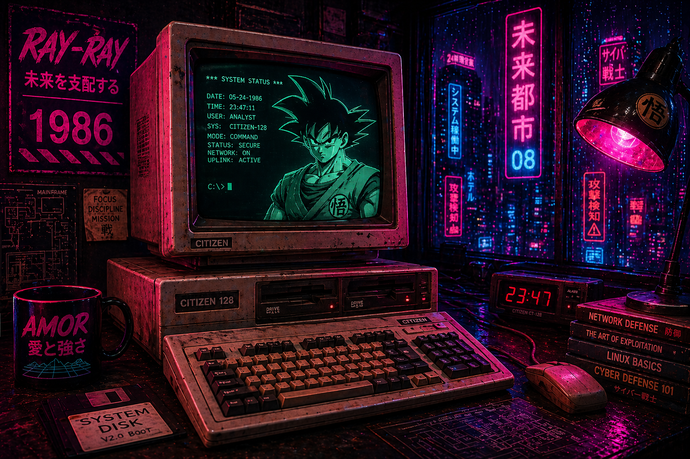

Cybersecurity Analyst focused on SIEM monitoring, threat detection, and cloud security operations. Hands-on experience with Wazuh, Kali Linux, MITRE ATT&CK mapping, brute-force detection, and AWS monitoring.
> Initializing security profile...
[OK] CySA+
[OK] AWS ready
[OK] Active Directory / Linux skills loaded
[POWER LEVEL] Increasing...
STATUS: ACTIVELY SEEKING SOC / CYBERSECURITY ROLE

I’m a 20-year Navy Veteran transitioning into cybersecurity, bringing leadership, discipline, and decision-making under pressure into security operations.
I have been actively upskilling through hands-on labs in SIEM monitoring, incident response, cloud security, Active Directory, Linux, Kali Linux, network reconnaissance, and vulnerability analysis.
My focus is understanding attacker behavior, analyzing logs, and translating technical findings into real-world risk.
Detected brute-force attacks using Wazuh and MITRE ATT&CK mapping.
SIEMRemediated vulnerabilities and validated using SCAP.
STIGBuilt secure VPC architecture and monitoring controls.
AWSAutomated SOC triage workflows using n8n.
SOCEmail: Arnoldo.Luna@outlook.com